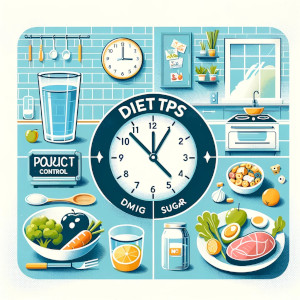

Diet Plan for Weight Loss and Cardio Exercise

Daily Meal Plan for Muscle Building
A healthy diet is the first step to a healthy life
> Click pictures to see more healthy tips
Diet Plan for Weight Loss and Cardio Exercise
Daily Meal Plan for Muscle Building